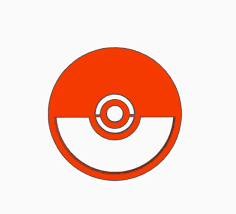
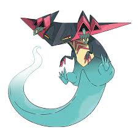

Dragapult

Dragapult adalah Pokémon naga . Penampilan Dragapult mengingatkan pada lepospondyl purba seperti Diplocaulus dan pesawat pengebom siluman modern. Ia memiliki kepala berbentuk segitiga seperti sayap; tubuh yang relatif pendek; dan ekor panjang yang pipih secara lateral mirip dengan ekor kadal air. Sisi punggung kepala Dragapult yang pipih dan bagian depan tubuhnya berwarna biru tua, yang memudar menjadi biru kehijauan muda di bagian belakang dan ekornya. Jambul lateral seperti sayap di kepalanya berwarna merah muda. Bagian perut kepala dan tubuhnya berwarna kuning kecoklatan muda, dan perutnya ditandai dengan tiga tanda panah merah muda yang mengarah ke kepalanya. Ia memiliki empat tanduk segitiga berongga dan mata kuning sipit dengan kelopak mata merah muda. Anggota tubuhnya pendek, tipis, dan bercakar, dengan anggota tubuh bagian depan berwarna merah muda. Ekor Dragapult menjadi transparan dan halus di bagian ujungnya.